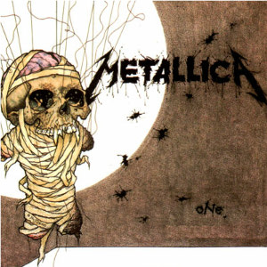
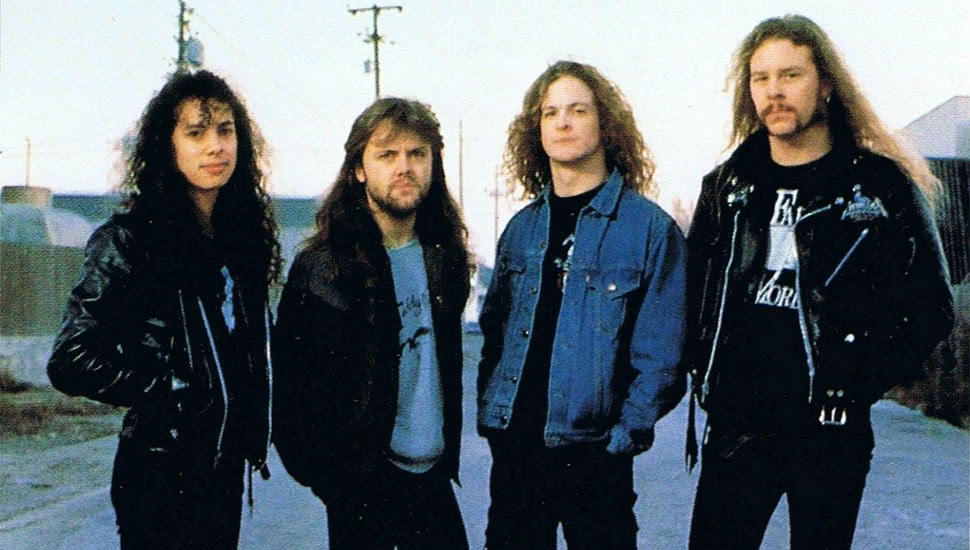
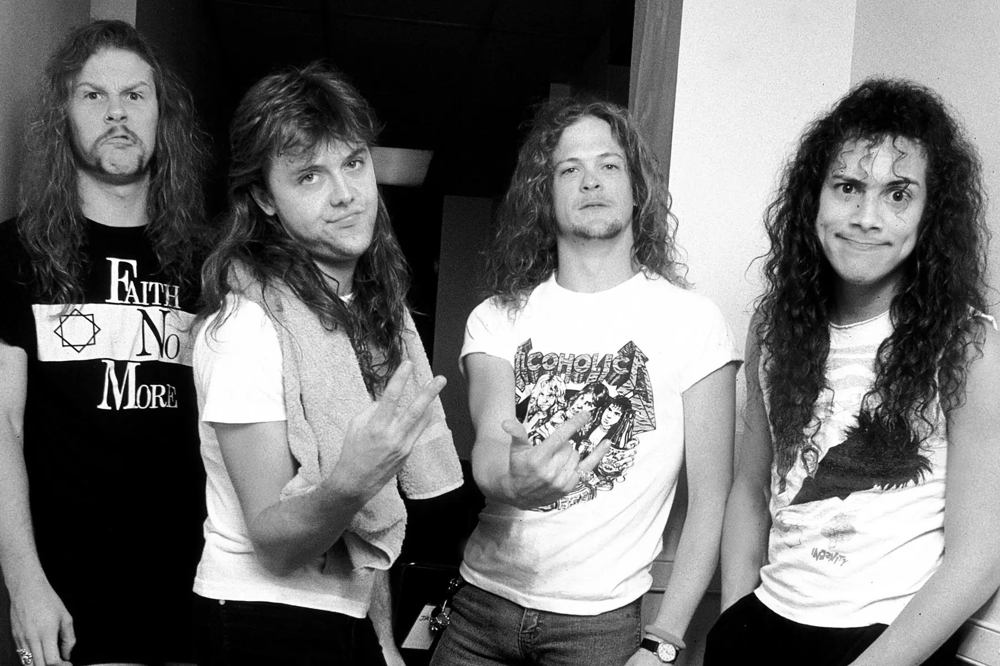
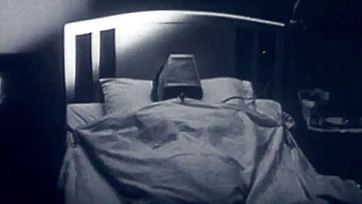

A One a Metallica egyik legismertebb és legfontosabb dala, amely az 1988-as ...And Justice for All albumon jelent meg. A szerzemény a háború borzalmait mutatja be egy súlyosan sérült katona szemszögéből, aki elvesztette végtagjait és érzékszervei nagy részét.
A dal különlegessége a fokozatos felépítés: a nyugodt, melankolikus kezdésből egy gyors és agresszív thrash metal fináléba vált át. Ez a szerkezet a Metallica egyik legismertebb zenei megoldásává vált.
A One történelmet írt azzal, hogy 1989-ben elnyerte a Best Metal Performance Grammy-díjat. Ez volt a Metallica első Grammy-győzelme, amely fontos mérföldkövet jelentett a zenekar és a metal műfaj számára is.
A dal videóklipje részleteket használ az 1971-es Johnny Got His Gun című filmből, amely ugyanazt a történetet dolgozza fel, mint amely a dal szövegét inspirálta. A klip jelentősen hozzájárult a szám népszerűségéhez.
A One máig a Metallica koncertjeinek egyik legfontosabb eleme, és sok rajongó szerint a zenekar egyik legnagyobb alkotása. Grammy-díja megnyitotta az utat a későbbi elismerések előtt, és hozzájárult ahhoz, hogy a Metallica a világ legismertebb metalzenekarává váljon.



